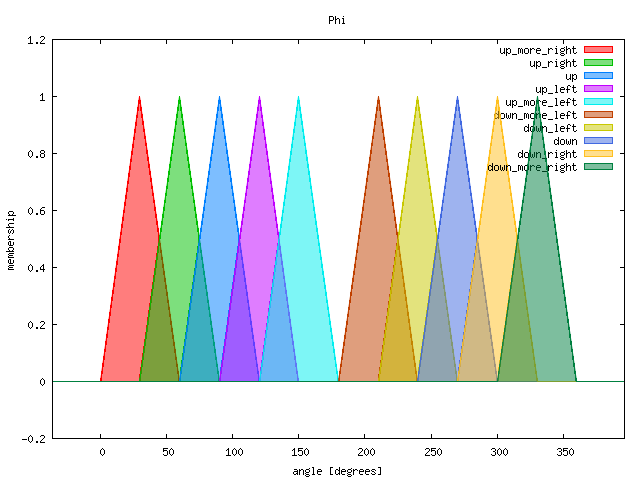
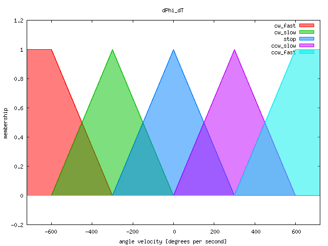
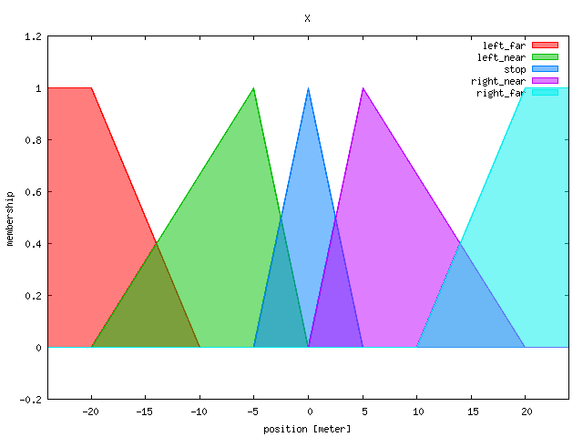
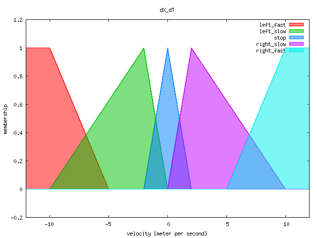
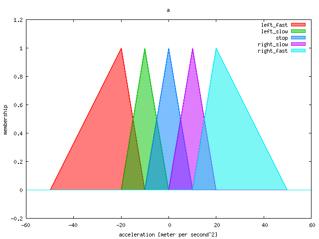
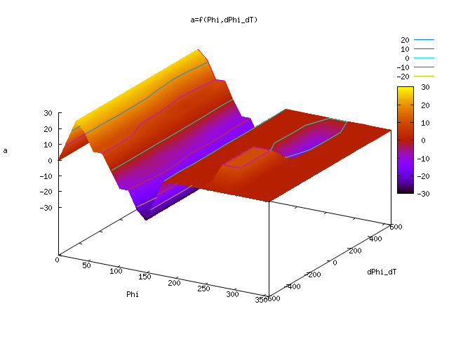

This is the angle of the inverted pendulum. It defined as 0 the pendulum is horizontal to the right, and increasing counter clockwise.

The angle velocity.

The absolute position. At the end the pendulum should be positioned at 0.

Velocity of the pendulum.

The acceleration of base point of the pendulum. This is the output of the fuzzy controller.

They might be more complex than necessary, but there intend is also some features of pyfuzzy.
If you like you can change them by yourself.
If the pendulum is upright and we don't move, or it is not upright but turns in the right direction to become upright, we should stop moving.
If the pendulum is tilted left we should also move left, but for reaching position 0 we supress this when the position is somewhere at the right of position 0. So we hold an slight left tilting which is followed until we reaching position near 0.

If the pendulum is tilted right we should also move right, but for reaching position 0 we supress this when the position is somewhere at the left of position 0. So we hold an slight right tilting which is followed until we reaching position near 0.

If the pendulum is tilted more left we should move left in any case, without any considerations about position.

If the pendulum is tilted more right we should move right in any case, without any considerations about position.

If the pendulum is hanging down, ....

If the pendulum is hanging down, ....

Without considering position control, you get the following function:
